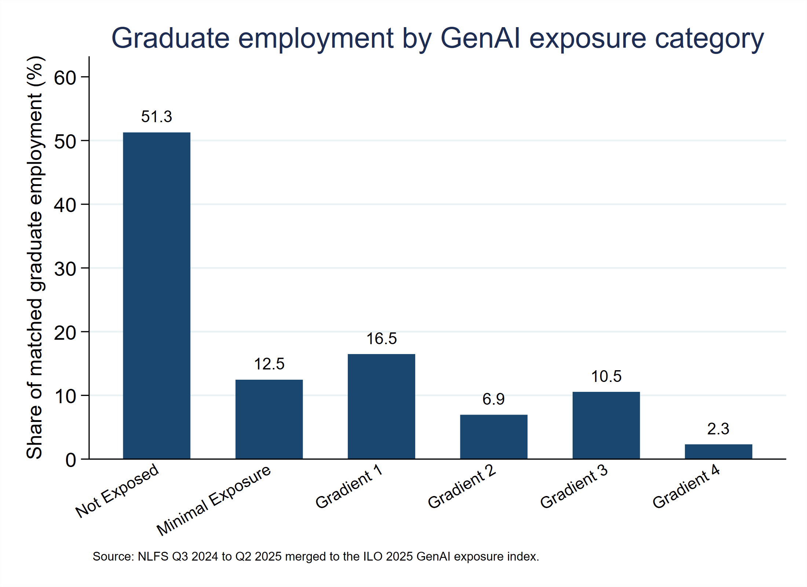
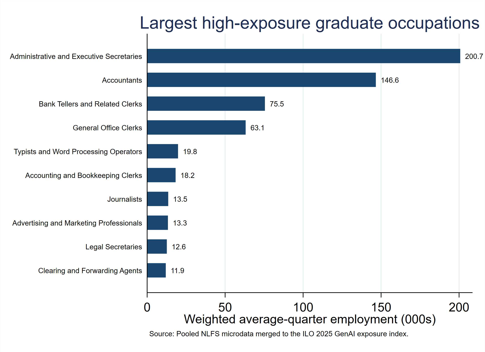
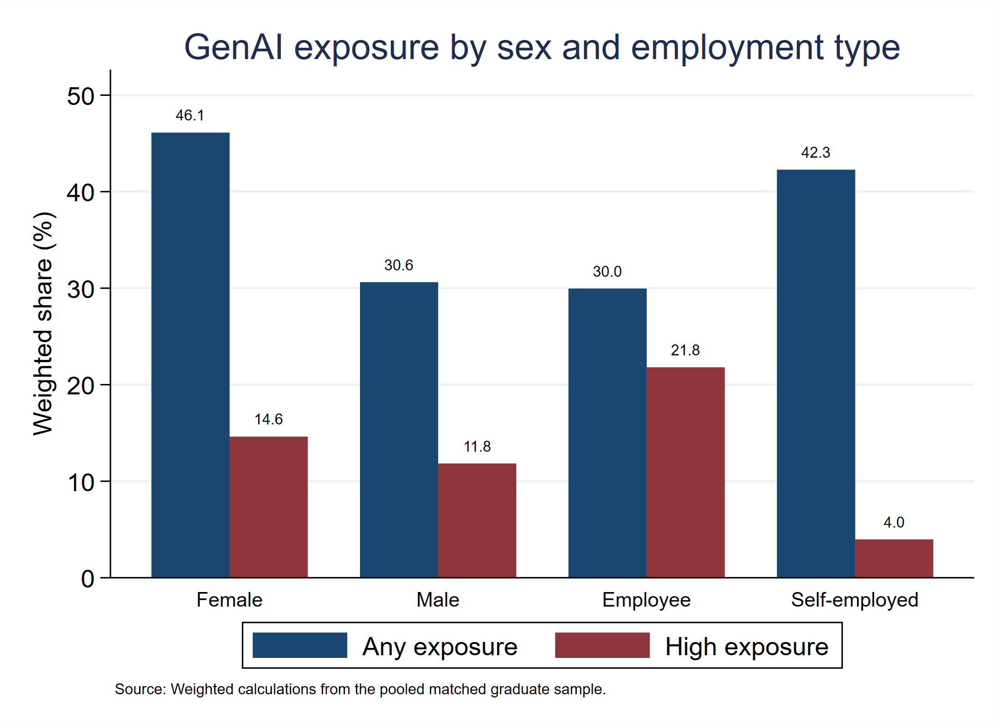
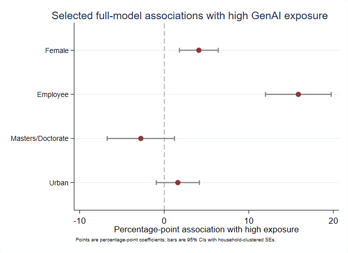

Introduction
Generative AI is expanding the range of cognitive, clerical and professional tasks that can be supported or partly automated. Occupational exposure, however, is not the same as observed job loss. Recent peer-reviewed evidence shows both substitution in highly digital tasks and productivity gains where AI complements workers, which makes a task-based exposure map more informative than a simple automation headline (Hötte et al., 2023).
This project links recent Nigeria Labour Force Survey microdata to the International Labour Organization's 2025 Generative AI occupational exposure index at the four-digit ISCO-08 level. The analysis focuses on workers whose highest qualification is BA/BSc/HND, Master's degree or Doctorate. The principal pooled sample covers 2024 Q3 to 2025 Q2 and contains 4,734 graduate workers with matched occupation exposure scores.
Nigeria's National Artificial Intelligence Strategy treats workforce capability, productivity and job transition as related policy priorities (National Center for Artificial Intelligence and Robotics [NCAIR], 2025). A nationally grounded occupational map helps identify where reskilling, workflow redesign and labour-market monitoring are likely to be most urgent.
Task-based analysis is important because an occupation contains many activities. Highly educated professional jobs can be strongly exposed to AI because the technology increasingly overlaps with analytical and information-processing abilities (Felten et al., 2021). Occupational exposure also depends on the match between AI capabilities and the cognitive tasks embedded in work (Tolan et al., 2021).
Exposure does not translate mechanically into displacement. There is no clear overall negative relationship between AI exposure and employment growth across the countries examined in one cross-country study (Georgieff & Hyee, 2022). By contrast, short-run substitution appears in more exposed online freelance work, showing that outcomes depend on how closely GenAI matches the task and how rapidly organisations can adjust (Hui et al., 2024).
The augmentation channel is also economically important. ChatGPT has been shown to increase productivity in professional writing tasks (Noy & Zhang, 2023). Productivity gains have also been observed after a generative-AI assistant was deployed in customer support, with larger gains among less experienced workers (Brynjolfsson et al., 2025).
Research Question
The study asks: Which graduate occupations in Nigeria are most exposed to generative AI, how is that exposure distributed across worker characteristics and employment forms, and is occupational exposure associated with usual weekly hours or approximate earnings over 2024 Q3 to 2025 Q2? The question is intentionally framed around occupational exposure rather than observed AI adoption or displacement.
Data and Methodology
The study uses a quantitative, non-experimental pooled-microdata design based on individual-level Nigeria Labour Force Survey files. The main estimation window covers 2024 Q3 to 2025 Q2. The unit of analysis is an individual graduate worker with a main-job record and a cleaned four-digit ISCO-08 occupation code. A strict graduate is defined as a worker whose highest qualification is BA/BSc/HND, Master's degree or Doctorate. Q2 2024 is excluded because only 58.99 percent of otherwise eligible graduate workers had the cleaned four-digit occupation code required for the ILO merge (National Bureau of Statistics [NBS], 2024a).
| Quarter | Graduate workers | Clean ISCO-08 | ISCO coverage | Main sample |
|---|---|---|---|---|
| 2024Q2 | 1,185 | 699 | 59.0% | Excluded from pooled main analysis |
| 2024Q3 | 1,260 | 1,260 | 100.0% | Included |
| 2024Q4 | 1,246 | 1,246 | 100.0% | Included |
| 2025Q1 | 1,173 | 1,173 | 100.0% | Included |
| 2025Q2 | 1,166 | 1,088 | 93.3% | Included |
Note: Graduate workers are strict graduates with a main-job record. Q2 2024 is excluded because occupation-code coverage is materially lower than in the other quarters. Source: Calculations from NLFS microdata.
Four-digit main-job occupation codes are merged to the ILO 2025 refined GenAI occupational exposure index. Three exposure outcomes are retained: HighExposure, equal to one for Gradients 3 or 4; AnyExposure, equal to one for Gradients 1 to 4; and the continuous ILO mean exposure score. The matched main regression sample contains 4,734 graduate workers (Gmyrek et al., 2025).
The principal occupational-placement specification uses NLFS population weights and a weighted linear probability model for the binary exposure outcomes. With X_i denoting sex, higher-degree status, age group, urban residence, geopolitical zone, quarter, employment type and broad industry, the general placement model is:
Y_i = b0 + X_i'b + e_i, Y_i in {HighExposure_i, AnyExposure_i, ExposureScore_i}.
HighExposure and AnyExposure are estimated as weighted linear probability models, while ExposureScore is estimated by weighted OLS. Reference categories are male, BA/BSc/HND, age 25-34, rural residence, South West, 2024 Q3, self-employment and education industry.
Hours_i = a0 + a1 ExposureScore_i + X_i'a + u_i.
ln(EarningsMid_i) = c0 + c1 ExposureScore_i + X_i'c + v_i.
The hours model is estimated by weighted OLS for observations reporting 1-112 usual main-job hours, with a robustness cap of 84 hours. The earnings model is restricted to 2024 Q3-Q4 and uses the log of a harmonised monthly midpoint derived from bounded weekly, fortnightly, monthly or annual earnings bands; the high-exposure dummy is estimated as an alternative exposure regressor. Standard errors are clustered by anonymised household interview key. State and state-by-quarter clustering, exclusion of workers aged 65 and above, an employees-only model and the 84-hour restriction are used as robustness checks. Because the harmonised file does not retain the full NLFS stratum and first-stage enumeration-area identifiers, the regressions should be interpreted as population-weighted conditional associations rather than a full design-based survey estimator.
Findings and Discussion
This section reports the complete set of four tables and four figures used in the full academic article so that the portfolio brief preserves the same empirical displays, values, units and uncertainty information while presenting a shorter interpretation.
The central result is differentiated exposure rather than universal risk. About 36.27 percent of matched graduate employment is located in ILO exposure Gradients 1 to 4, while 12.85 percent is concentrated in Gradients 3 and 4. High exposure is concentrated in administrative, accounting, banking and office occupations. Female graduates and employees are also more likely to be located in highly exposed occupations after the main controls.
| Exposure category | n | Employment (000s) | Share | Mean score |
|---|---|---|---|---|
| Not Exposed | 2,402 | 2,811.5 | 51.27% | 0.219 |
| Minimal Exposure | 590 | 683.2 | 12.46% | 0.349 |
| Gradient 1 | 773 | 903.4 | 16.47% | 0.349 |
| Gradient 2 | 327 | 380.9 | 6.95% | 0.447 |
| Gradient 3 | 523 | 578.2 | 10.54% | 0.540 |
| Gradient 4 | 119 | 126.4 | 2.30% | 0.617 |
Note: Weighted employment is an average-quarter estimate using pooled weight = NLFS population weight / 4. Source: Calculations from NLFS microdata merged to the ILO 2025 occupational exposure index (Gmyrek et al., 2025).

More than half of matched graduate employment is in occupations classified as Not Exposed, and a further 12.46 percent is in Minimal Exposure. This pattern argues against treating the graduate labour market as uniformly vulnerable. At the same time, about one in eight matched graduate workers is in Gradients 3 or 4, indicating a meaningful concentration of occupations whose tasks are more technically susceptible to GenAI transformation. Generative-era AI exposure has also moved further into cognitive and professional work internationally (Casas et al., 2026).
Occupational concentration
Administrative and executive secretaries form the largest high-exposure group in the pooled weighted data, followed by accountants, bank tellers and related clerks, and general office clerks. The common feature is a high concentration of text, record, calculation and information-processing tasks rather than low educational attainment. Professional and information-intensive work can rank highly on AI exposure even when it requires substantial education (Felten et al., 2021).
| Occupation | ILO category | Mean score | Employment (000s) |
|---|---|---|---|
| Administrative and Executive Secretaries | Gradient 3 | 0.54 | 200.7 |
| Accountants | Gradient 3 | 0.51 | 146.6 |
| Bank Tellers and Related Clerks | Gradient 3 | 0.58 | 75.5 |
| General Office Clerks | Gradient 4 | 0.60 | 63.1 |
| Typists and Word Processing Operators | Gradient 4 | 0.65 | 19.8 |
| Accounting and Bookkeeping Clerks | Gradient 4 | 0.64 | 18.2 |
| Journalists | Gradient 3 | 0.54 | 13.5 |
| Advertising and Marketing Professionals | Gradient 3 | 0.55 | 13.3 |
| Legal Secretaries | Gradient 3 | 0.55 | 12.6 |
| Clearing and Forwarding Agents | Gradient 3 | 0.57 | 11.9 |
Note: Employment is the weighted average-quarter count in thousands. Source: Calculations from pooled NLFS microdata merged to the ILO 2025 occupational exposure index (Gmyrek et al., 2025).

Gender and employment-type differences
Descriptively, any GenAI exposure covers 46.11 percent of weighted female graduate employment compared with 30.62 percent of male graduate employment, while high exposure covers 14.62 percent of female and 11.83 percent of male graduate employment. Employment form shows a larger contrast: 21.79 percent of weighted employee graduate employment is in Gradients 3 or 4, compared with 3.96 percent among self-employed graduates. These are weighted descriptive differences and should not be interpreted as causal effects of sex or employment status.

Adjusted associations
The descriptive exposure gap by sex remains after adjustment. Female graduate workers are associated with a 4.09 percentage-point higher probability of being in a Gradient 3 or 4 occupation after controlling for age, advanced education, residence, zone, quarter, employment type and broad industry. The association is statistically significant at the 1 percent level, but it should not be interpreted as an effect of AI adoption.
Employment form matters even more. Employees are associated with a 15.86 percentage-point higher probability of high exposure relative to self-employed graduates, conditional on the model controls. This appears consistent with the greater concentration of standardised cognitive and clerical tasks inside organisational wage employment.
| Outcome | Variable | Effect | SE | p-value |
|---|---|---|---|---|
| High exposure | Female | 4.09 pp | 1.17 | <0.001 |
| High exposure | Employee | 15.86 pp | 1.98 | <0.001 |
| High exposure | Masters/Doctorate | -2.77 pp | 2.03 | 0.173 |
| High exposure | Urban | 1.61 pp | 1.30 | 0.217 |
| Any exposure | Female | 7.98 pp | 1.51 | <0.001 |
| Exposure score | Female | 0.013 | 0.004 | 0.001 |
| Exposure score | Masters/Doctorate | 0.018 | 0.005 | 0.001 |
| Weekly hours | Exposure score | -3.310 | 2.570 | 0.198 |
| 2024 log earnings | Exposure score | 0.611 | 0.235 | 0.009 |
| 2024 log earnings | High exposure | 0.092 | 0.069 | 0.180 |
Note: Binary exposure outcomes are weighted linear probability models, and effects are shown in percentage points. Other effects are in the dependent variable units. Exposure models: N = 4,734; 3,682 household clusters. Weekly-hours model: N = 4,530; 3,561 household clusters. Both earnings models: N = 2,025; 1,632 household clusters, restricted to 2024 Q3–Q4. Source: Study estimates.

The analysis does not find a statistically clear association between the continuous exposure score and usual weekly hours. This is an observational relationship among employed workers and should not be interpreted as evidence about GenAI adoption, displacement, or changes in employment. Early population evidence likewise cautions against equating occupational exposure with realised employment losses (Kauhanen & Rouvinen, 2025).
As a secondary exercise, the restricted 2024 earnings model produces a positive association between the continuous exposure score and approximate monthly earnings, but the binary high-exposure indicator is not statistically significant. Because the measure is based on harmonised earnings-band midpoints for Q3-Q4 2024, it remains approximate and should not be treated as a causal wage effect. Related worker-level evidence also reports positive exposure-wage associations that vary with task and skill composition (Engberg et al., 2025).
Implications
The results support occupation-specific transition policy rather than a universal AI-skills programme. Administrative secretaries, accountants, bank tellers, office clerks and related information-intensive roles are logical early targets for training in supervised AI use, verification of generated output, data confidentiality, domain judgement and workflow redesign.
Training should emphasise complementary capabilities rather than generic familiarity with AI tools. The value of a skill depends strongly on the other capabilities with which it is combined (Stephany & Teutloff, 2024). For exposed graduates, useful complements include domain expertise, communication, data literacy, verification and professional judgement.
Universities and professional bodies should account for the movement toward skill-based hiring. AI-related vacancies increasingly appear to reward demonstrable skills while relying less heavily on degree requirements (Bone et al., 2025). Applied AI literacy should therefore be embedded inside graduate disciplines rather than treated as a separate technical specialisation.
Gender should be built into transition planning because female graduates remain more exposed after the principal controls. The result does not imply inevitable displacement, but it identifies a group for whom task transformation may be especially important. Programmes aimed at women in administrative, finance and service roles should support progression into higher-value analytical, judgement and client-facing tasks.
Future labour-force surveys should measure actual GenAI use, task purpose, frequency, employer policy and training. Direct adoption measures would allow Nigeria to move from technical exposure mapping toward credible evaluation of productivity, employment, hours and earnings.
Limitations
The study measures occupation-level technical exposure to generative AI rather than actual use of AI by workers or employers. The estimates therefore cannot establish that GenAI caused employment changes, displacement, changes in weekly hours or changes in earnings. They identify how workers are distributed across occupations whose tasks differ in their technical exposure to GenAI.
The main analysis pools quarterly cross-sectional NLFS files rather than following the same workers through an AI-adoption event. Q2 2024 is excluded because four-digit occupation-code coverage among otherwise eligible graduate workers was only 58.99 percent. Population weights and household-clustered standard errors are used, but the harmonised file does not retain the complete stratum and first-stage enumeration-area identifiers required to reproduce the full NBS complex-survey variance estimator.
The earnings exercise is deliberately secondary. It is restricted to 2024 Q3-Q4 and uses approximate monthly earnings constructed from bounded income-band midpoints rather than a harmonised exact wage measure. Its coefficients should therefore be read as exploratory associations. Future work would benefit from direct measures of GenAI adoption, task-level use, employer policy, digital skills and longitudinal labour-market outcomes.
Conclusion
The study maps a concentrated pattern of occupational GenAI exposure among Nigerian graduates; it does not measure actual AI adoption or job displacement. About 36 percent of matched graduate employment is in occupations with some GenAI exposure, while about 13 percent is in Gradients 3 and 4. Female graduates and employees are more concentrated in high-exposure occupations after controls, but occupational exposure is not associated with a statistically clear difference in usual weekly hours. The restricted earnings evidence is positive only under the continuous exposure measure and remains exploratory because it is based on harmonised income-band midpoints. For Nigeria, the practical priority is to identify the occupations and tasks where AI-assisted work is most likely to expand and to build complementary skills, workflow redesign and labour-market monitoring around those areas.
References
Bone, M., González Ehlinger, E., & Stephany, F. (2025). Skills or degree? The rise of skill-based hiring for AI and green jobs. Technological Forecasting and Social Change, 214, 124042. https://doi.org/10.1016/j.techfore.2025.124042
Brynjolfsson, E., Li, D., & Raymond, L. R. (2025). Generative AI at work. The Quarterly Journal of Economics, 140(2), 889–942. https://doi.org/10.1093/qje/qjae044
Casas, P., Fernández-Macías, E., Martínez-Plumed, F., Gómez, E., González-Vázquez, I., & Salotti, S. (2026). A rising tide: Revisiting the occupational impact of AI in the generative era. Structural Change and Economic Dynamics, 80, 223–240. https://doi.org/10.1016/j.strueco.2026.07.016
Engberg, E., Koch, M., Lodefalk, M., & Schroeder, S. (2025). Artificial intelligence, tasks, skills, and wages: Worker-level evidence from Germany. Research Policy, 54(8), 105285. https://doi.org/10.1016/j.respol.2025.105285
Felten, E. W., Raj, M., & Seamans, R. (2021). Occupational, industry, and geographic exposure to artificial intelligence: A novel dataset and its potential uses. Strategic Management Journal, 42(12), 2195–2217. https://doi.org/10.1002/smj.3286
Georgieff, A., & Hyee, R. (2022). Artificial intelligence and employment: New cross-country evidence. Frontiers in Artificial Intelligence, 5, 832736. https://doi.org/10.3389/frai.2022.832736
Gmyrek, P., Berg, J., Kamiński, K., Konopczyński, F., Ładna, A., Nafradi, B., Rosłaniec, K., & Troszyński, M. (2025). Generative AI and jobs: A refined global index of occupational exposure. ILO Working Paper 140. International Labour Organization. https://doi.org/10.54394/HETP0387
Hui, X., Reshef, O., & Zhou, L. (2024). The short-term effects of generative artificial intelligence on employment: Evidence from an online labor market. Organization Science, 35(6), 1977–1989. https://doi.org/10.1287/orsc.2023.18441
Hötte, K., Somers, M., & Theodorakopoulos, A. (2023). Technology and jobs: A systematic literature review. Technological Forecasting and Social Change, 194, 122750. https://doi.org/10.1016/j.techfore.2023.122750
Kauhanen, A., & Rouvinen, P. (2025). Assessing early labour market effects of generative AI: Evidence from population data. Applied Economics Letters. Advance online publication. https://doi.org/10.1080/13504851.2025.2513973
National Bureau of Statistics. (2024a). Nigeria Labour Force Survey Q2 2024: Study documentation and methodology. National Bureau of Statistics, Nigeria. https://microdata.nigerianstat.gov.ng/index.php/catalog/152
National Center for Artificial Intelligence and Robotics. (2025). National Artificial Intelligence Strategy. National Information Technology Development Agency, Nigeria. https://ncair.nitda.gov.ng/wp-content/uploads/2025/09/National-Artificial-Intelligence-Strategy-19092025.pdf
Noy, S., & Zhang, W. (2023). Experimental evidence on the productivity effects of generative artificial intelligence. Science, 381(6654), 187–192. https://doi.org/10.1126/science.adh2586
Stephany, F., & Teutloff, O. (2024). What is the price of a skill? The value of complementarity. Research Policy, 53(1), 104898. https://doi.org/10.1016/j.respol.2023.104898
Tolan, S., Pesole, A., Martínez-Plumed, F., Fernández-Macías, E., Hernández-Orallo, J., & Gómez, E. (2021). Measuring the occupational impact of AI: Tasks, cognitive abilities and AI benchmarks. Journal of Artificial Intelligence Research, 71, 191–236. https://doi.org/10.1613/jair.1.12647